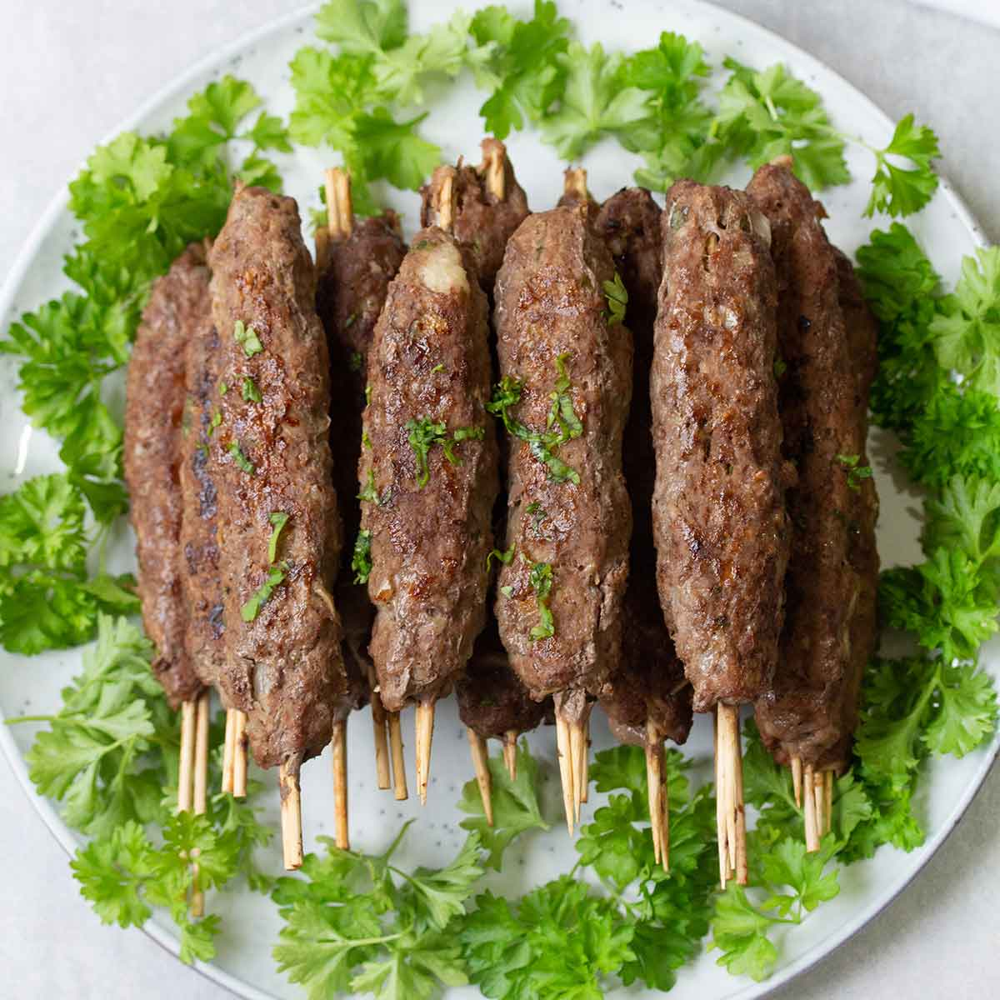

Kofta

Description
Egyptian Kofta is a flavorful, juicy, and well-seasoned minced meat dish that is a staple in Egyptian and Middle Eastern cuisine. Typically made from ground beef or lamb, Kofta is mixed with aromatic spices, fresh herbs, and onions before being shaped into logs or patties and grilled to perfection.
The preparation starts with finely minced meat, combined with chopped onions, garlic, parsley, and a blend of warm spices such as cumin, coriander, and cinnamon. The mixture is then shaped onto skewers or formed into patties and grilled or pan-fried until browned and juicy.
Egyptian Kofta is commonly served with warm pita bread, a side of tahini sauce, or a refreshing salad. It’s a popular dish for family gatherings and special occasions, offering a delicious balance of smoky, savory, and aromatic flavors.
Ingredients
- 1 lb ground beef or lamb (or a mix of both)
- 1 small onion, finely grated
- 2 garlic cloves, minced
- ¼ cup fresh parsley, finely chopped
- 1 tsp ground cumin
- 1 tsp ground coriander
- ½ tsp ground cinnamon
- ½ tsp paprika
- Salt and black pepper, to taste
- 1 tbsp olive oil
- Skewers (if grilling)
Steps
- In a large bowl, mix the ground meat with the grated onion, garlic, parsley, and all the spices.
- Use your hands to combine everything well until the mixture is evenly seasoned.
- Shape the mixture into long logs around skewers or form small patties if pan-frying.
- Brush lightly with olive oil to prevent sticking.
- Grill over medium-high heat for about 4-5 minutes per side, or until fully cooked and slightly charred.
- If pan-frying, heat a bit of oil in a skillet and cook for about 3-4 minutes per side.
- Serve hot with pita bread, tahini sauce, and a fresh salad.
Home